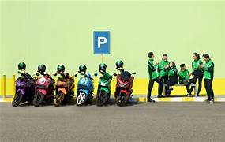
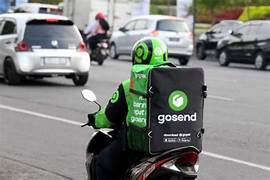

1. GORIDE
GoRide adalah salah satu layanan utama dari Gojek yang menyediakan jasa transportasi dengan sepeda motor. Layanan ini memungkinkan pengguna untuk memesan ojek online melalui aplikasi Gojek. Dengan GoRide, pengguna bisa mendapatkan pengemudi yang akan mengantar mereka ke tujuan dengan lebih cepat, terutama di tengah kemacetan lalu lintas.
Fitur penting GoRide antara lain:
-Kemudahan Pemesanan: Pengguna bisa memesan pengemudi motor langsung dari aplikasi, memasukkan lokasi penjemputan dan tujuan, serta melihat estimasi biaya perjalanan.
-Keamanan: Gojek memberikan fitur seperti pelacakan perjalanan secara langsung (live tracking), informasi pengemudi, dan sistem rating untuk memastikan keamanan pengguna.
-Efisiensi Waktu: Dengan menggunakan motor, perjalanan sering kali lebih cepat dibandingkan dengan mobil, terutama di daerah perkotaan yang padat lalu lintas.
-Harga Terjangkau: Tarif GoRide biasanya lebih murah dibandingkan dengan layanan transportasi lainnya, terutama untuk jarak pendek hingga menengah. Tarif dihitung berdasarkan kombinasi jarak tempuh dan waktu tempuh. Ada biaya minimum untuk perjalanan jarak dekat, dan tarif dapat bervariasi tergantung kondisi lalu lintas, jam sibuk (peak hour), dan area tertentu. Biasanya, Gojek juga memberikan promo atau diskon berkala yang membuat harga semakin terjangkau bagi pengguna.

2. GOCAR
GoCar adalah salah satu layanan transportasi berbasis mobil yang ditawarkan oleh Gojek. Layanan ini memungkinkan pengguna memesan mobil untuk perjalanan dengan lebih nyaman dan fleksibel, terutama untuk bepergian bersama keluarga atau dalam kelompok. GoCar sangat populer untuk perjalanan yang memerlukan kenyamanan lebih dibandingkan dengan sepeda motor, dan sering digunakan untuk perjalanan bisnis, keluarga, atau acara khusus
Fitur penting GoCar antara lain:
-Kemudahan Pemesanan: Pengguna dapat memesan mobil langsung dari aplikasi Gojek, dengan memasukkan lokasi penjemputan dan tujuan. Sistem akan secara otomatis mencarikan pengemudi terdekat.
-Keamanan dan Kenyamanan: GoCar menyediakan informasi detail tentang pengemudi, pelacakan perjalanan (live tracking), dan sistem rating untuk menjaga kenyamanan serta keamanan pengguna selama perjalanan.
-Efisiensi Lebih Luas: Dengan kendaraan roda empat, GoCar memberikan lebih banyak ruang bagi penumpang, cocok untuk perjalanan keluarga, membawa barang lebih banyak, atau sekadar menikmati kenyamanan dalam perjalanan.
-Harga Terjangkau dan Transparan: Tarif GoCar dihitung berdasarkan jarak dan waktu tempuh. Ada biaya minimum untuk perjalanan singkat dan tarif bisa bervariasi tergantung jam sibuk (peak hour) dan kondisi lalu lintas. Pengguna juga sering mendapatkan promo atau diskon yang membuat harga lebih hemat.
3. GOSEND
GoSend adalah layanan pengiriman barang dari Gojek yang menggunakan kendaraan roda dua (motor) untuk mengirim paket kecil atau dokumen ke berbagai lokasi dengan cepat. Layanan ini sangat berguna untuk keperluan pengiriman dalam kota yang membutuhkan waktu singkat.GoSend menjadi solusi ideal untuk kebutuhan pengiriman yang cepat dan efisien, baik untuk bisnis maupun kebutuhan pribadi.
Fitur penting GoSend antara lain:
-Kemudahan Pemesanan: Pengguna dapat memesan layanan pengiriman langsung melalui aplikasi Gojek dengan memasukkan lokasi penjemputan dan tujuan pengiriman. Pengguna juga dapat mengirim lebih dari satu paket dalam satu kali pemesanan.
-Keamanan dan Pelacakan: GoSend menyediakan pelacakan perjalanan secara langsung (live tracking), sehingga pengirim dan penerima bisa memantau status paket secara real-time. Informasi pengemudi juga tersedia untuk menjaga keamanan selama proses pengiriman.
-Kecepatan Pengiriman: Dengan menggunakan sepeda motor, GoSend mampu mengatasi kemacetan lalu lintas, membuat pengiriman lebih cepat dibandingkan layanan pengiriman tradisional, terutama di area perkotaan.
-Harga Terjangkau dan Transparan: Tarif GoSend dihitung berdasarkan jarak pengiriman. Ada biaya minimum untuk pengiriman jarak dekat, dan tarif dapat bervariasi tergantung kondisi lalu lintas atau promosi yang sedang berlangsung. GoSend sering menawarkan diskon yang membuat pengiriman lebih hemat.

4. GOFOOD
GoFood adalah layanan pesan-antar makanan yang ditawarkan oleh Gojek. Layanan ini memungkinkan pengguna memesan makanan dari berbagai restoran dan warung yang tersedia di sekitar lokasi mereka, kemudian diantar langsung oleh mitra pengemudi ke tempat tujuan. GoFood menjadi salah satu solusi populer bagi pengguna yang ingin menikmati makanan favorit mereka tanpa perlu keluar rumah atau kantor.
Fitur penting GoSend antara lain:
-Kemudahan Pemesanan: Pengguna dapat memilih makanan dari ribuan restoran di aplikasi Gojek, memasukkan pesanan, dan menentukan alamat pengantaran. Sistem akan mencarikan pengemudi terdekat untuk mengambil dan mengantar pesanan.
-Beragam Pilihan Makanan: GoFood menawarkan berbagai jenis makanan, mulai dari makanan cepat saji, makanan tradisional, hingga restoran internasional. Pengguna juga bisa mencari makanan berdasarkan kategori, rating, atau lokasi.
-Kecepatan Pengiriman: Dengan pengemudi yang menggunakan sepeda motor, GoFood dapat mengantar makanan dengan cepat, terutama di area perkotaan. Pengguna bisa memantau status pesanan secara real-time dari proses pemesanan hingga pengiriman.
-Harga Terjangkau dan Promo: Harga makanan di GoFood sesuai dengan harga di restoran, dan sering kali ada promo menarik seperti diskon atau potongan harga ongkos kirim. Tarif pengiriman dihitung berdasarkan jarak antara restoran dan lokasi pengantaran, dengan biaya yang transparan dan mudah dilihat sebelum memesan.